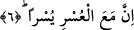

zorluğun tümü kolaylığa açılır. Çünkü Allah’ın rahmeti gazabını geçmiştir. Bu, Allah
Teâlâ’dan gelen bir inâyettir. Zira bu zorluk büyüklerin kalplerini parlatma vesilesi,
onların istidadlarını genişletme aracı olabilir ve böylece onların kalpleri ilahi huzurun
tecellisi için bu sayede genişleyebilir. Öte yandan mulâim ve gayrı mulâim olan payı ve
nasipleri daha çok olabilir. Nitekim Peygamber Efendimiz (s.a.) bir hadis-i şeriflerinde
şöyle buyururlar: “İnsanların içinde belâsı en şiddetli olanlar peygamberlerdir. Sonra
velilerdir, sonra onları izleyenler ardından da onların ardından gelenlerdir.” [143]
Bundan dolayı Allah Teâlâ bir âyet-i kerimede şöyle buyurur: “Bana duâ edin, kabul
edeyim” (Mü’min, 40/60) Peygamber Efendimiz (s.a.) de şöyle buyurur: “Allah Teâlâ
duâsında ısrarlı olanları sever.” [144]
Yukarda okumuş olduğumuz âyette zorluk anlamına gelen “usr” kelimesinin başında
“el” takısı varken, kolaylık anlamına gelen “yusr” kelimesinin başında getirilmemiştir.
Bununla latif bir nükteye işâret olunmaktadır. Dünya zorluk yurdudur; çünkü zorluk
işiten kişi tarafından bilinen bir husus olduğu için kelimenin başına “el” takısı
getirilmiştir. Kolaylık ise insanlar tarafından ne olduğu bilinmediği için onun başına bu
takı getirilmemiştir.
6. Gerçekten, zorlukla beraber bir kolaylık daha vardır.
Bu ifâde anlama pekiştirme katmak için tekrarlanmış bir ifâdedir veya okuduğumuz bu
âyet başlı başına öncesiyle ilişkisi olmayan bir vaad anlamınadır. Vaad olduğu takdirde
zorluğun kendisini iki adet kolaylık izleyeceği anlamı çıkmaktadır. Bu kolaylıklardan
birisi dünya kolaylığı iken diğeri âhiret sevabı olmuş olur. Bu tıpkı şu hadis-i şerifteki
ifâdeye benzer: “Oruçlu için iki ferahlık anı vardır. Birisi iftar ettiği andaki duyduğu
ferahlık, diğeri rab ile karşılaşacağı andaki ferahlıktır.” [145] Nitekim Peygamber
Efendimiz’in (s.a.) “hiçbir zorluk iki kolaylığa üstün gelemez” [146] ifâdesini bu
mantıkla değerlendirmek gerekir. Bunun anlamı şudur: Dünya zorluğu, dünya ve âhiret
kolaylığına üstün gelemez. Bir kurala göre marife bir kelime, tekrarlandığında birincisi
ile ikincisi aynıdır. Bu kelime ister bilinen olsun, isterse cins ismi olsun, farketmez.
Ama nekre olan kelime tekrarlandığında ikinci ile birincide kasdedilenden başka bir
şeyin kasdedilme ihtimali vardır.
İbn Melek Şerhu’l-Menar’da der ki: Marife bir kelime ifâdede tekrar marife olarak
bir daha ifâde edildiğinde ikincisi birincisinin aynısıdır. Tıpkı İnşirah sûresindeki
zorluk anlamına gelen ve iki kez tekrarlanan “usr” kelimesinde olduğu gibi. Bu, İbn
Abbas (r.a.)’ın “hiçbir zorluk iki kolaylığa galip gelemez” ifâdesinin de anlamıdır.
Fahru’l-İslam ise şöyle diyor: Âyeti bu kabilden kabul etmek bize göre tartışmalıdır.
Çünkü âyet bu mânâya ihtimalli olmadığı gibi şu sözümüz de aynı şekilde o mânâya